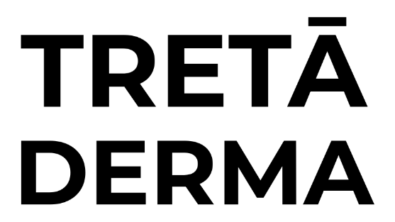

Healthcare · Clinic content
Treta Derma Skin & Hair Institute project.
Social media management for a skin and hair institute, with a calm and informative approach to clinic communication.

Client project · Healthcare · Clinic content Project scope
What the work covers.
Social media content and creative design for a skin and hair clinic.
The page keeps this client’s work separate from the main homepage, so new original designs can be added without making the main portfolio crowded.
- ✳Social media management
- ✳Clinic content
- ✳Creative design
- ✳Educational posts
Selected work
Creative gallery coming next.
This page is ready for the original posts, carousels, reels covers and campaign artwork for this client. As the actual assets are added, they will be shown here in a dedicated gallery—separate from the homepage.
Work with me ↗